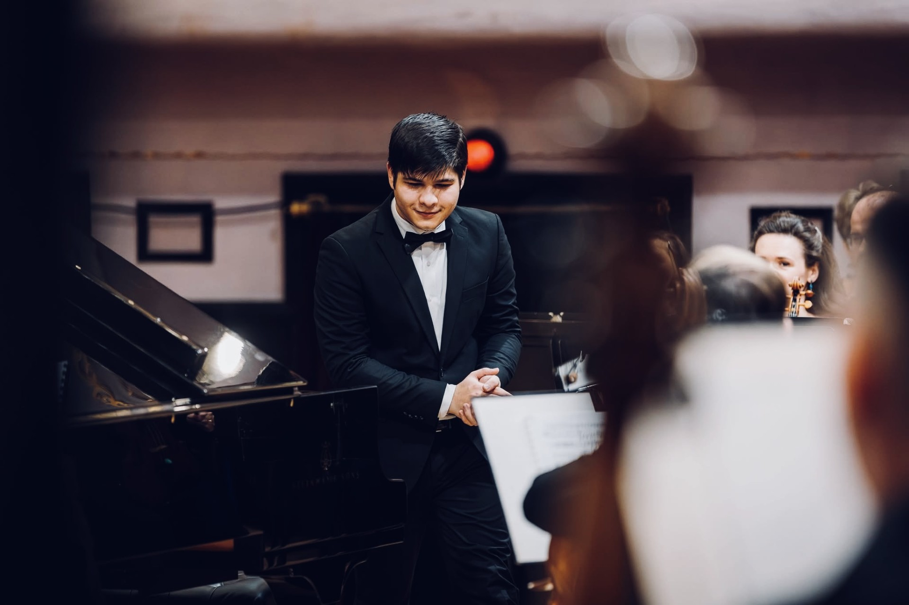
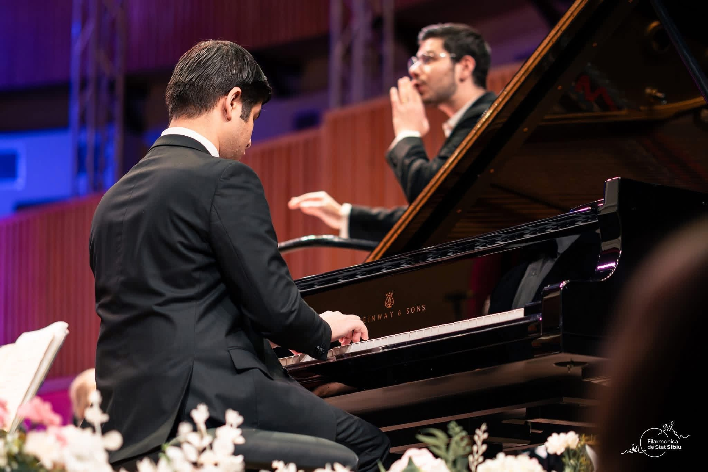
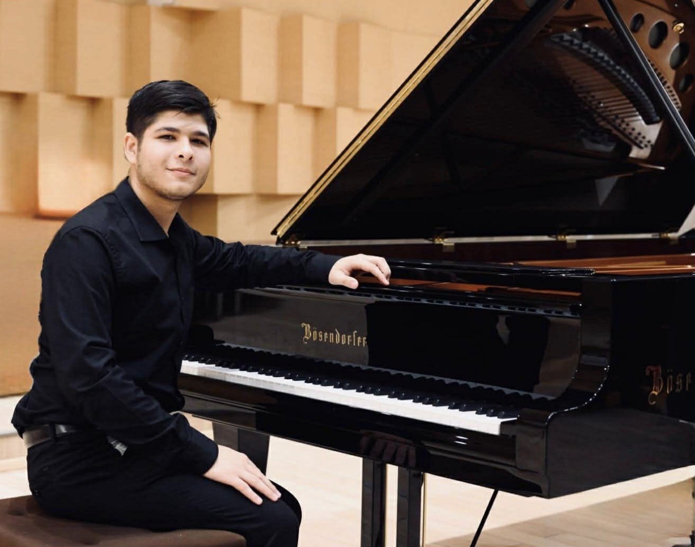
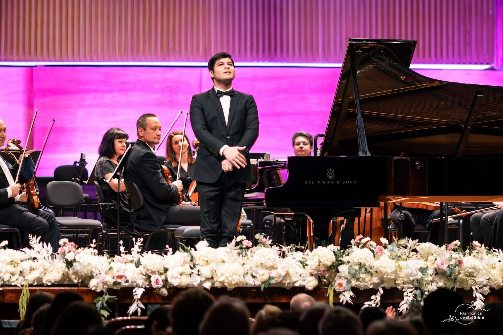

24SEP
2026
2026
Solo Piano Recital
London, United Kingdom
Frédéric Chopin · Claude Debussy

Concert Pianist · Royal Academy of Music
“Exceptional sound, remarkable virtuosity and profound musical sensitivity.”
Discover RobertA distinctive musical voice shaped by technical brilliance, expressive depth and a deep connection to the great piano repertoire.
Robert Bascoveanu is an award-winning Romanian concert pianist based at the Royal Academy of Music in London, performing as a soloist, recitalist and chamber musician across Europe and beyond.
Read biography ↗
Selected performances from 2025–2026.
London, United Kingdom
Oltenia Philharmonic
Vâlcea
Sibiu, Romania
Sibiu, Romania
Târgu Mureș, Romania
Satu Mare, Romania
Craiova, Romania · Solo Piano Recital
Vâlcea, Romania · Solo Piano Recital
Ploiești, Romania
Craiova, Romania
Cluj-Napoca, Romania
Pitești, Romania · Solo Piano Recital
Craiova, Romania · Solo Piano Recital
“Technical brilliance with a distinctive musical voice and an exceptional depth of expression.”
From the Baroque and Classical traditions through the Romantic, Impressionist and twentieth-century repertoire.
This is a selected repertoire list based on the programmes supplied for the website. A full repertoire list can be added as a dedicated downloadable PDF.

Robert Bascoveanu is a highly acclaimed, award-winning Romanian concert pianist based at the Royal Academy of Music in London, UK, widely recognised for his exceptional sound, remarkable virtuosity and profound musical sensitivity.
Born in 2007 in Craiova, Romania, Robert demonstrated exceptional musical abilities and absolute pitch from an early age. Raised in a family of musicians, he grew up surrounded by music. He began his piano studies with Liviu Pîrvu in his hometown and subsequently continued his artistic formation with the distinguished Romanian pianists Boldizsár Csíky Jr. and Maestro Mihai Ungureanu.
At the age of sixteen, Robert made his orchestral debut with the Oltenia Philharmonic Symphony Orchestra in Craiova, performing Pyotr Ilyich Tchaikovsky’s Piano Concerto No. 1 under the baton of Maestro Gheorghe Costin. Since then, he has appeared extensively as both a recitalist and concerto soloist, collaborating with leading Romanian orchestras and internationally acclaimed conductors.
In 2025, Robert was awarded a full scholarship to the Royal Academy of Music in London, where he studies under the tutelage of Florian Mitrea. He was selected from more than 300 pianists from around the world to join the Academy, continuing his artistic development under the guidance of distinguished musicians and pedagogues.
Robert has received more than fifty prizes, distinctions and awards at national and international competitions in Romania, Hungary, Spain, France, Italy, Germany, Poland, the United Kingdom and the United States of America.
His achievements include First Prize at the prestigious Carl Filtsch International Piano Competition in 2026, where he competed against pianists up to the age of 33. In the final round, he performed Sergei Rachmaninoff’s Piano Concerto No. 2 in C minor, Op. 18.
In 2024, Robert was awarded First Prize at the Marosvasarhely International Piano Competition, competing against pianists up to the age of 33. In the final round, he performed Ludwig van Beethoven’s Piano Concerto No. 5 in E-flat major, Op. 73, “Emperor”.
At the prestigious Dinu Lipatti International Piano Competition, Robert was awarded the Prize for the Highest-Ranking Romanian Pianist.
His repertoire encompasses the major piano literature from the Baroque and Classical periods through the Romantic, Impressionist and twentieth-century traditions, with a particular affinity for the great Romantic concerto repertoire.
Based at the Royal Academy of Music in London, Robert continues to develop an international performing career as a soloist, recitalist and chamber musician, appearing in an increasingly diverse range of concert engagements across Europe and beyond.

Selected performances. Captions can be replaced with exact programme titles once the YouTube metadata is confirmed.
A selection of concert and portrait photography.
For concert engagements, recital invitations, collaborations, press and other enquiries, please use the contact form.
The final management/contact email can be added here before publication.